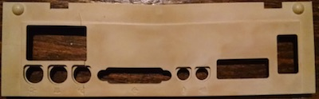

So as my computer age, I've noticed that there are 3 primary issues iwth the plastics.
Color is mostly affected by UV light. There are many well documented ways of de-yellowing old Plastic, I think the 8-bit guy has done a great job of comparing the different methods in a youtube video, so I will link to that here. Adventures in Retrobrite
It seems like most macs made before 1994 still have pretty strong plastic. But some time in 1994 it seems apple switched to some kind of ABS plastic that really brittles with age, its ot a point where if I even try to remove any panels from say an LC 575 or a Performa from around 1994, all the tabs break off from the slightest touch, I'm pretty sure that in another 10 years these machnes will just turn to dust with the slightest tap...
I have one lead on this front, which I will be trying shortly, I've read that submerging brittle plastcs in boiling water for a few minutes will cause the polymers to become more mobile and thus rebond with one another when they cool. I have a few extremely brittle macs that are beyond saving from plastic breakage that I will be trying this with to see if I can strengthen the already broken parts, If it works I'll try it with somethign that Is still nice, provided I can manage to take it apart...
So my first attempt here was somewhat unscientific, I read that the Glass Transition Temperature of ABS plastic was 105 Degrees C, which, in theory, it should stand up to boiling water without transitioning. Therefore, I pulled out a stockpot and filled it with water and brought it to a simmer. Once the pot was simmering I dropped my test bezel in. The bezel was very brittle and would not stand up to any kind of flexing without snapping, it was also quite yellow. After around 2 minutes in the water, I fished it out with a chopstick... here are my results.

The bezel does appear to be stronger, unfortunately it is also warped. I was able to subject it to considerably more bending before I started to hear cracking sounds, so I think my hypothesis is sound, however I believe that I have subjected it to too much heat, hense the warping. Something else worth noticing is that the yellowing of the plastic seems to have become blotchy, which indicates that there has been some movement in the plastic on a color level.
A good next step might be to find a way to subject the plastic to lower levels of heat for longer and see if I get similar results without the warping...
Finally I've had a lot of success here with acetone. ABS plastic is easially welded with acetone, and it creates a strong bond, sometimes stronger than the surrounding plastic. I'll upload some pictures of my next ABS welding session.